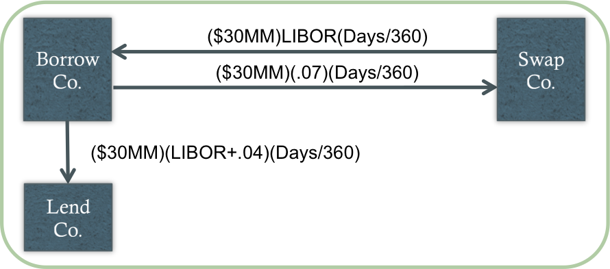
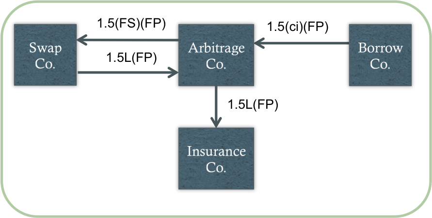
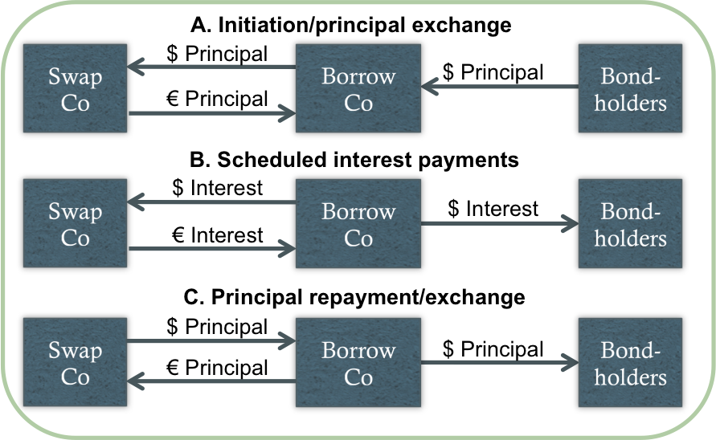
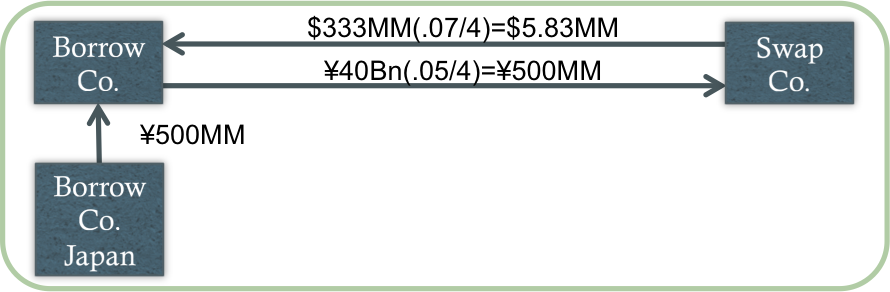
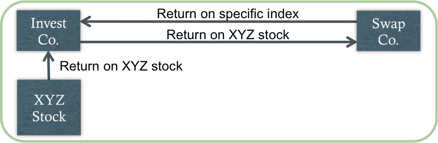
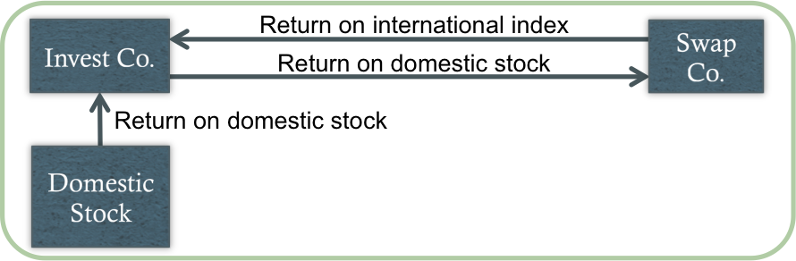
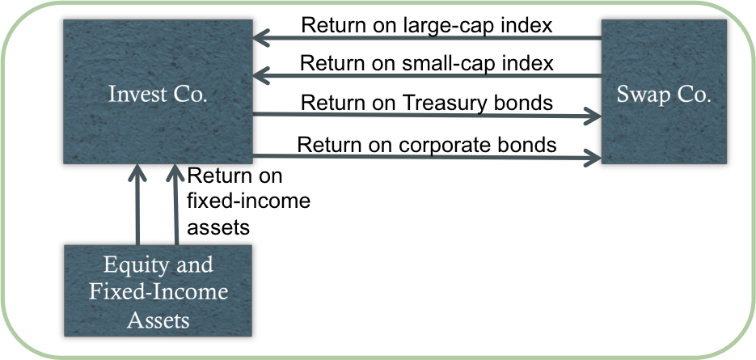
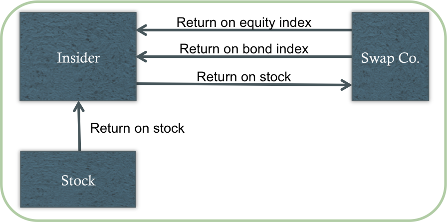

Swaps can be viewed as combinations of forward contracts
Converting Floating and Fixed Rates

Net effect: BorrowCo pay 7% + 4% = 11% fixed
Adjusting Duration with Swaps
Negative duration (pay fixed to receive floating)
Terms (maturity/payment frequency)
Notional principal: NP = B[(MDURT-MDURB)/MDURS]
For example, to adjust the duration of a $100MM portfolio from 6.00 to 3.75 using a swap with MDUR of -.50, the NP will be: $100MM(3.75-6.00)/-.50 = $450MM
Structured Notes
Leveraged floater

Net effect: ArbitrageCo earns 1.5(ci-FS)(FP) fixed
Structured Notes (cont'd)
Inverse floater
Net effect: ArbitrageCo earns FP(FS+ci-b) fixed
Converting a Loan to Another Currency

Converting Cash Receipts into Domestic Currency
Current spot exchange rate of ¥120/$

Net effect: BorrowCo converts its quarterly ¥500MM into ~$5.83MM at a fixed rate
Managing Dual-Currency Bonds
Diversifying a Concentrated Portfolio

Net effect: InvestCo pays the return on XYZ stock and receives the return on the specified index
Achieving International Diversification

Net effect: InvestCo earns the return on the domestic stock and enters a swap paying that domestic return and receiving the return on an international index
Changing Asset Allocation

Net effect: InvestCo changes its asset allocation to weight equities more heavily
Reducing Insider Exposure

Net effect: The insider effectively sells his exposure and receives a return of an equivalent amount in equity and/or bonds
Swaptions
Payer vs. receiver swaptions
American vs. European swaptions
Strategies/applications:
Anticipating future borrowing
Terminating a swap
Synthetically removing (adding) a call feature in callable (noncallable) debt